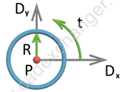
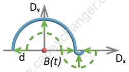
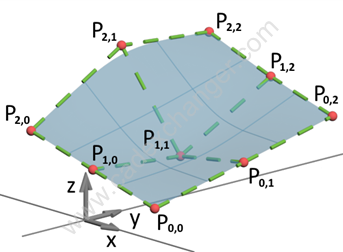

B-Rep (boundary) representation provides precise definition of a part. B-Rep is defined via a combination of geometry and topology: geometry (points, curves and surfaces) defines a body form and topology (vertices, edges, faces, shells, etc) defines trimming of underlying geometry.
CAD Exchanger API follows the ISO 10303-42 specification and uses its geometrical and topological entities.
The following sections describe supported types of geometrical curves and surfaces and topological entities.
Curves can be defined in 3D model space or in 2D parametric space of a surface. The latter are called parametric space curves or p-curves.
CAD Exchanger provides two hierarchy of classes - for 3D and 2D curves. The former derives from the ModelData_Curve class and the latter from the ModelData_Curve2d class.
CAD Exchanger supports the following curve types:
The curve type is returned by ModelData_Curve::Type() (or ModelData_Curve2d::Type()) as ModelData_CurveType enumeration.
| Type | C++ classes | Example |
|---|---|---|
| Line | ModelData_Line, ModelData_Line2d | |
| Circle | ModelData_Circle, ModelData_Circle2d |

|
| Ellipse | ModelData_Ellipse, ModelData_Ellipse2d | |
| Hyperbola | ModelData_Hyperbola, ModelData_Hyperbola2d | |
| Parabola | ModelData_Parabola, ModelData_Parabola2d | |
| Bezier curve | ModelData_BezierCurve, ModelData_BezierCurve2d | |
| B-Spline curve | ModelData_BSplineCurve, ModelData_BSplineCurve2d | |
| Offset curve | ModelData_OffsetCurve, ModelData_OffsetCurve2d |

|
| Trimmed curve | ModelData_TrimmedCurve, ModelData_TrimmedCurve2d |
CAD Exchanger supports the following surface types:
Classes representing surfaces subclass the ModelData_Surface class. The surface type is returned by ModelData_Surface::Type() as ModelData_SurfaceType enumeration.
| Type | C++ class | Example |
|---|---|---|
| Plane | ModelData_Plane | |
| Conical Surface | ModelData_ConicalSurface | |
| Cylindrical Surface | ModelData_CylindricalSurface | |
| Spherical Surface | ModelData_SphericalSurface | |
| Toroidal Surface | ModelData_ToroidalSurface | |
| Surface of Linear Extrusion | ModelData_SurfaceOfLinearExtrusion | |
| Surface of Revolution | ModelData_SurfaceOfRevolution | |
| Bezier Surface | ModelData_BezierSurface |

|
| B-Spline Surface | ModelData_BSplineSurface | 
|
| Offset Surface | ModelData_OffsetSurface | |
| Rectangular Trimmed Surface | ModelData_RectangularTrimmedSurface |
Topological entities are used to define trimming of the geometrical entities and connectivity between the entities.
Topological entities are eventually owned by the body (ModelData_Body) which are roots in B-Rep representation. For the list of supported body types refer to Body types.
Classes representing topological entities subclass the ModelData_Shape class.
The shape type is returned returned by ModelData_Shape::Type() as ModelData_ShapeType enumeration.
| Type | C++ class | Example |
|---|---|---|
| Vertex | ModelData_Vertex | 
|
| Edge | ModelData_Edge | 
|
| Wire | ModelData_Wire | |
| Face | ModelData_Face | |
| Shell | ModelData_Shell | |
| Solid | ModelData_Solid |
Refer to B-Rep Geometry Example.